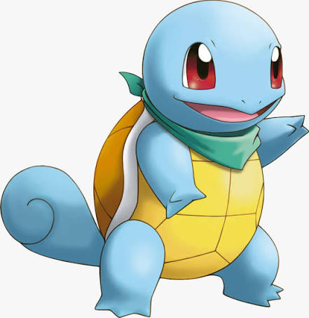

Voltar ao Home
Squirtle

Áudio: fala squirtle
>
Vídeo: squirtle usando esguicho
Informações:
Squirtle é um Pokémon do tipo água, conhecido por sua aparência fofa e suas habilidades aquáticas. Ele é o mascote da franquia Pokémon e é famoso por sua amizade com o protagonista Ash Ketchum na série de anime. Squirtle evolui de Wynaut quando atinge um alto nível de amizade e pode evoluir para Blastoise quando exposto a uma Pedra da Água. Ele é conhecido por seu ataque característico, o "Hidro Bomba", que pode atingir seus oponentes. Squirtle é um dos Pokémon mais populares e reconhecíveis, sendo um ícone cultural em todo o mundo.